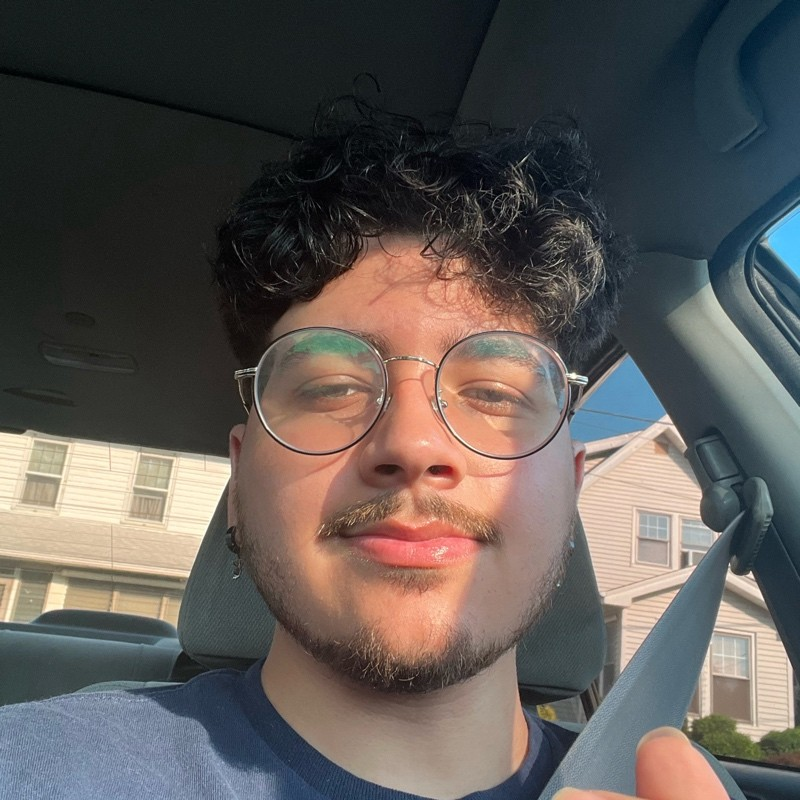

Esterlin Jerez Paulino
Full-Stack Developer
with a passion in testing
About-Me
I'm a recent Computer Science graduate from New Jersey City University with a passion for building AI-powered web applications that solve real-world problems. As a full-stack developer, I specialize in creating scalable solutions using modern technologies like React, Next.js, Django, and MongoDB. My experience ranges from leading backend development during the Headstarter AI Fellowship—where I pitched TimeMesh and received a $1,000 investment offer—to mentoring aspiring developers through CodePath.
Beyond development, I'm deeply passionate about Software Quality Assurance, ensuring every application I build meets the highest standards for clients, users, and business requirements through rigorous testing and attention to detail. I thrive on transforming complex challenges into intuitive, reliable user experiences, whether it's reducing study prep time by 60% with an AI study platform or building calendar apps that serve hundreds of users. When I'm not coding or testing, you'll find me exploring the latest in AI integration and helping others break into tech.
Projects

Study AI
An AI-powered study platform that transforms PDFs into interactive learning materials.